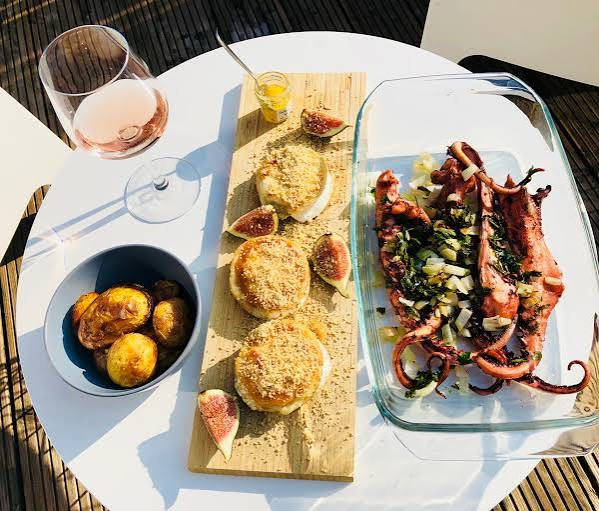
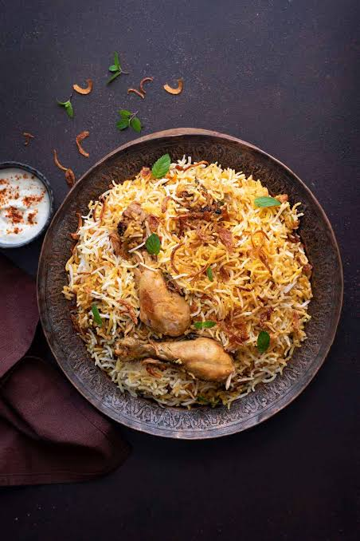
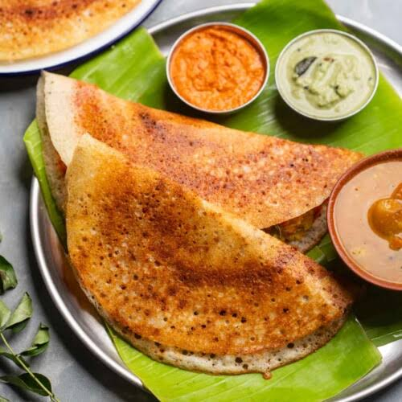
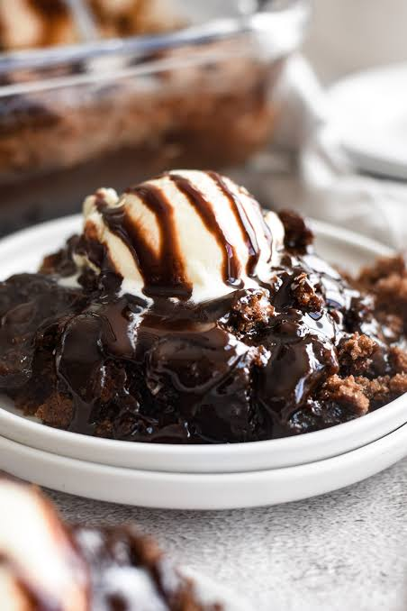
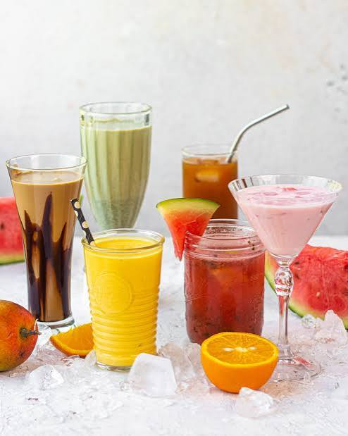

Explore Different Foods

Food is an important part of every culture. Different countries have their own traditional dishes, cooking methods and flavours. Let's explore some popular food varieties.
Indian Food

Chicken Biryani
Biryani is a popular Indian rice dish prepared with rice, spices and vegetables or meat. It is loved for its rich flavour.

Masala Dosa
Masala dosa is a famous South Indian dish made with fermented rice and lentil batter, filled with potato masala.
Italian Food

Pizza
Pizza is a popular Italian dish made with a baked dough base, sauce, cheese and different toppings.

Pasta
Pasta is a famous Italian food prepared in different shapes and served with delicious sauces.
Fast Food

Cheese Burger
A burger is made with a bun, patty, vegetables and tasty sauces.
Desserts and Drinks


Desserts and refreshing drinks make every meal more enjoyable.